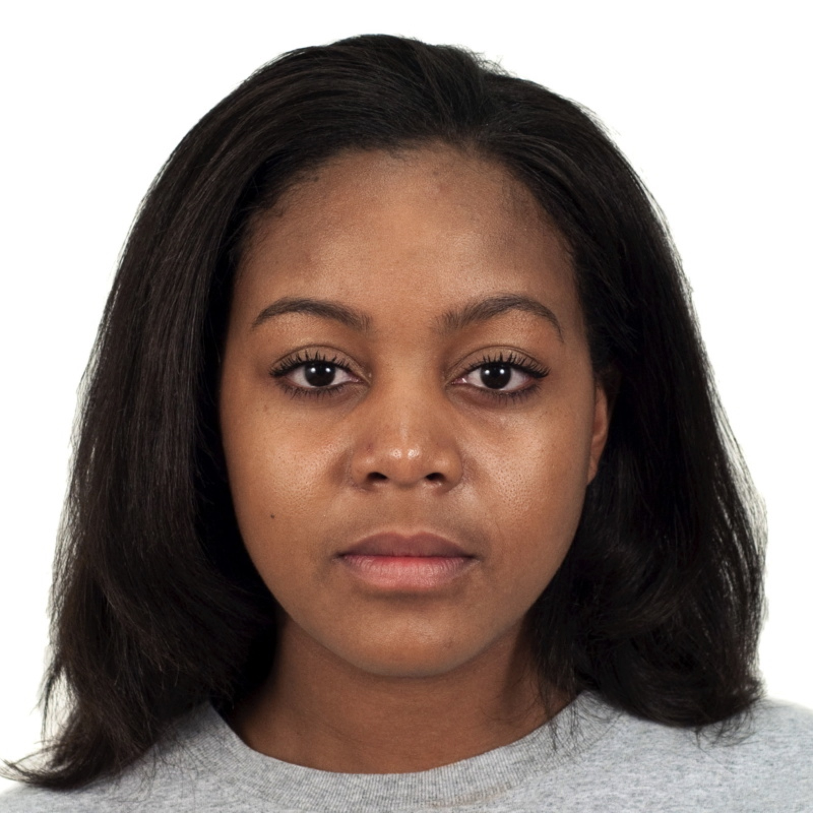
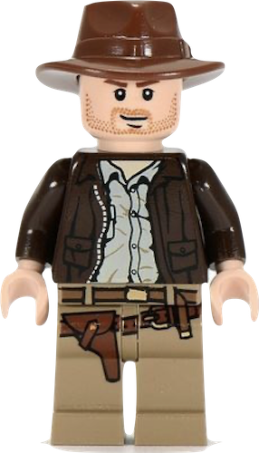
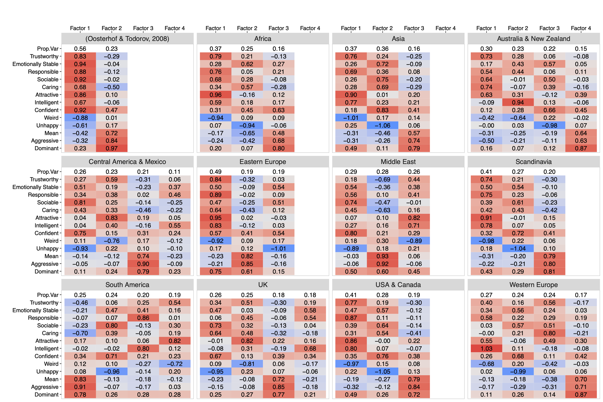

Replicability and Generalisability in Face Research
debruine.github.io/talks/rep-gen-faces/

Abstract
In this talk, I will discuss several initiatives to increase the replicability and generalisability of research on faces, with a special focus on big team science efforts, such as the Psychological Science Accelerator and ManyFaces. I will also make an argument for reproducible stimulus construction and introduce webmorphR, an R package for reproducibly scripting face stimulus creation. Additionally, I will explain how a common methodology in face research, the composite method, produces very high false positive rates, and explain alternatives to this, including the use of mixed effects models for analysing individual face ratings.
Psychological Science Accelerator
Jones, B.C., DeBruine, L.M., Flake, J.K. et al. (2021). To which world regions does the valence–dominance model of social perception apply?. Nature Human Behaviour 5, 159–169. https://doi.org/10.1038/s41562-020-01007-2
Which face looks more trustworthy?
Which face looks more trustworthy?
Which face looks more responsible?

Which face looks more responsible?
Which face looks more dominant?
Which face looks more dominant?
Which face looks more intelligent?
Which face looks more intelligent?
Which face looks more caring?
Which face looks more caring?
Face Ratings
- Attractive
- Weird
- Mean
- Trustworthy
- Aggressive
- Caring
- Emotionally stable
- Unhappy
- Responsible
- Sociable
- Dominant
- Confident
- Intelligent
Todorov et al. (2008)
Valence-Dominance Model
Study Stats
>3M data points
- 12,660 participants
- 11,570 post-exclusion
- 126 labs
- 44 countries
- 25 languages
- 243 authors
Team

CRediT
PCA Loadings
PCA Loadings
Principal Components Analysis shows little regional variability
EFA Loadings
Exploratory Factor Analysis shows more regional variability
Secondary Data Challenge
- Examining the “attractiveness halo effect” - Carlotta Batres, Victor Shiramizu (
Current Psychology )
- Region- and Language-Level ICCs for Judgments of Faces - Neil Hester and Eric Hehman (
Psychological Science )
- Variance & Homogeneity of Facial Trait Space Across World Regions - Sally Xie and Eric Hehman (
Psychological Science )
- The Facial Width-to-Height Ratio (fWHR) and Perceived Dominance and Trustworthiness: Moderating Role of Social Identity Cues (Gender and Race) and Ecological Factor (Pathogen Prevalence) - Subramanya Prasad Chandrashekar
- Is facial width-to-height ratio reliably associated with social inferences? A large cross-national examination - Patrick Durkee and Jessica Ayers
- Population diversity is associated with trustworthiness impressions from faces - Jared Martin, Adrienne Wood, and DongWon Oh (
Psychological Science )
- Do regional gender and racial biases predict gender and racial biases in social face judgments? - DongWon Oh and Alexander Todorov
- Hierarchical Modelling of Facial Perceptions: A Secondary Analysis of Aggressiveness Ratings - Mark Adkins, Nataly Beribisky, Stefan Bonfield, and Linda Farmus
ManyFaces
ManyFaces is a recently formed big team science group for face perception and face recognition research.
Stimulus Meta-Database

Stimulus Collection
Face image sets tend to suffer from one or more of:
- a lack of age and ethnic diversity
- insufficient diversity of poses or expressions
- a lack of standardisation (e.g., different lighting, backgrounds, camera-to-head distance, and other photographic properties) that makes it impossible to combine image sets
- restricted ability to share
- unethical procurement
Protocol Development
Kit (~£800 total)
üì∑ camera: Canon EOS 250D Digital SLR Camera with 18-55mm IS STM Lens (¬£649)
üíæ memory card: SanDisk 32GB SDHC Card (¬£9)
üåà color checker: Calibrite ColorChecker Classic ~A4 (¬£66)
üí° stand/light: Fovitec Bi-Colour LED Ring Light Kit (¬£71)
Reproducible Stimuli
DeBruine, L. M., Holzleitner, I. J., Tiddeman, B., & Jones, B. C. (2022). Reproducible Methods for Face Research. PsyArXiv. https://doi.org/10.31234/osf.io/j2754
Vague Methods
Each of the images was rendered in gray-scale and morphed to a common shape using an in-house program based on bi-linear interpolation (see e.g., Gonzalez & Woods, 2002). Key points in the morphing grid were set manually, using a graphics program to align a standard grid to a set of facial points (eye corners, face outline, etc.). Images were then subject to automatic histogram equalization. (Burton et al. 2005, 263)
Photoshop
These pictures were edited using Adobe Photoshop 6.0 to remove external features (hair, ears) and create a uniform grey background. (Sforza et al. 2010, 150)
The averaged composites and blends were sharpened in Adobe Photoshop to reduce any blurring introduced by blending. (Rhodes et al. 2001, 615)
Scriptable Methods
The average pixel intensity of each image (ranging from 0 to 255) was set to 128 with a standard deviation of 40 using the SHINE toolbox (function lumMatch) (Willenbockel et al., 2010) in MATLAB (version 8.1.0.604, R2013a). (Visconti di Oleggio Castello et al. 2014, 2)
We used the GraphicConverterTM application to crop the images around the cat face and make them all 1024x1024 pixels. One of the challenges of image matching is to do this process automatically. (Paluszek and Thomas 2019, 214)
Commerical morphing
The faces were carefully marked with 112 nodes in FantaMorph™, 4th version: 28 nodes (face outline), 16 (nose), 5 (each ear), 20 (lips), 11 (each eye), and 8 (each eyebrow). To create the prototypes, I used FantaMorph Face Mixer, which averages node locations across faces. Prototypes are available online, in the Personality Faceaurus [http://www.nickholtzman.com/faceaurus.htm]. (Holtzman 2011a, 650)
WebMorphR
Templates

Masking
Custom Mask
“Standard” Oval Mask
Alignment

Alignment with Patch Fill
Composites
neu_orig <- load_stim_neutral() |>
add_info(webmorphR.stim::london_info) |>
subset(face_gender == "female") |>
subset(face_eth == "black") |> subset(1:5)
smi_orig <- load_stim_smiling() |>
add_info(webmorphR.stim::london_info) |>
subset(face_gender == "female") |>
subset(face_eth == "black") |> subset(1:5)
all <- c(neu_orig, smi_orig) |>
auto_delin("dlib70", replace = TRUE)
aligned <- all |>
align(procrustes = TRUE, fill = patch(all)) |>
crop(.6, .8, y_off = 0.05)
neu_avg <- subset(aligned, 1:5) |> avg(texture = FALSE)
smi_avg <- subset(aligned, 6:10) |> avg(texture = FALSE)Composites
Continuum
Word Stimuli
# make a vector of the words and colours they should print in
colours <- c(red = "red3",
green = "darkgreen",
blue = "dodgerblue3")
# make vector of labels (each word in each colour)
labels <- names(colours) |> rep(each = 3)
# make blank 800x200px images and add labels
stroop <- blank(3*3, 800, 200) |>
label(labels,
size = 100,
color = colours,
weight = 700,
gravity = "center")Face Composites
DeBruine, L. M. (2023). The Composite Method Produces High False Positive Rates. PsyArXiv. https://doi.org/10.31234/osf.io/htrg9
Composites
People chose the composite of people who self-reported a high probability to cooperate in a prisoners’ dilemma as more likely to cooperate about 62% of the time (Little et al. 2013)
Women’s Height

A t-test shows no significant difference (\(t_{13.42}\) = 1.23, \(p\) = .121, \(d\) = 0.55), which is unsurprising. We simulated the data from the same distribution, so we know for sure there is no real difference here.
Composite Height
| Odd Composite | Even Composite |
|---|---|
| 165.8 cm | 160.9 cm |
| üßç‚Äç‚ôÄÔ∏è | üßç‚Äç‚ôÄÔ∏è |
Rating Height
Now the women with odd birthdays are significantly taller than the women with even birthdays (\(t_{49}\) = 2.61, \(p\) = .006, \(d\) = 0.53)!
Is this a fluke?
Individual versus composite method. The individual method shows the expected uniform distribution of p-values, while the composite method has an inflated false positive rate.
Dark Triad
Holtzman (2011a), replicated by Alper, Bayrak, and Yilmaz (2021)
Simulate Composite Ratings
Following Holtzman (2011a), we simulated 100 sets of 6 “image pairs” with no actual difference in appearance, and 105 raters giving -5 to +5 ratings for which face in each pair looks more Machiavellian, narcissistic, or psychopathic. By chance alone, some of the values will be significant in the predicted direction.
More Raters?

Composite Size
With only 10 stimuli per composite (like the Facesaurus composites), the median unsigned difference between composites from populations with no real difference is 0.31 SD.
Mixed Effects Models

DeBruine LM, Barr DJ. (2021). Understanding Mixed-Effects Models Through Data Simulation. Advances in Methods and Practices in Psychological Science. 4(1). https://doi.org/10.1177/2515245920965119
Random Composites
Five random pairs of composites from a sample of 20 faces (10 in each composite). Can you spot any differences?